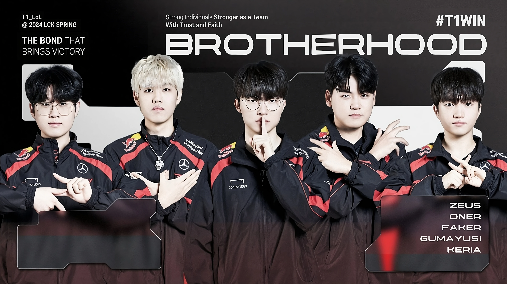

Quiz!
About Me 와 About Like 페이지에 있는 내용들을 가지고 퀴즈를 맞춰보자!!
다음 중 올바른 프로필 사진은?
1. 2022 Spring Faker

2. 2022 Worlds Faker

3. 2024 Spring T1
정답은 바로!!
1번 2022 Spring Faker 였습니다!
제가 가장 존경하는 T1 스포츠 선수의 본명 3글자를 적어주세요.
정답은 바로!!
"이상혁" 입니다!
다음 중, T1의 현재 선수 라인업이 우승한 라이엇 공인 대회를 모두 골라주세요!
2021 LCK Spring
2021 Mid-Season Invitational
2021 LCK Summer
2021 LOL World Championship
2022 LCK Spring
2022 Mid-Season Invitational
2022 LCK Summer
2022 LOL World Championship
2023 LCK Spring
2023 Mid-Season Invitational
2023 LCK Summer
2023 LOL World Championship
2024 LCK Spring
2024 Mid-Season Invitational
2024 Esports World Cup
2021 Mid-Season Invitational
2021 LCK Summer
2021 LOL World Championship
2022 LCK Spring
2022 Mid-Season Invitational
2022 LCK Summer
2022 LOL World Championship
2023 LCK Spring
2023 Mid-Season Invitational
2023 LCK Summer
2023 LOL World Championship
2024 LCK Spring
2024 Mid-Season Invitational
2024 Esports World Cup
정답은 바로!!
2022 LCK Spring, 2023 LOL World Championship입니다!
~해설~ T1의 현재 로스터인 제오페구케는 2022년 스프링에 결성되었으며(2021년 기록 제외, 애초에 당시 T1이 우승한 적도 없음.), 2024년 EWC의 경우 라이엇 공인 대회가 아니므로 정답이 아니다. T1은 2022 스프링과 2023 롤드컵에서 우승했고, 2022 MSI, 2022 Summer, 2022 Worlds, 2023 Spring, 2023 Summer, 2024 Spring은 준우승, 2023 MSI, 2024 MSI는 3위를 기록했다.